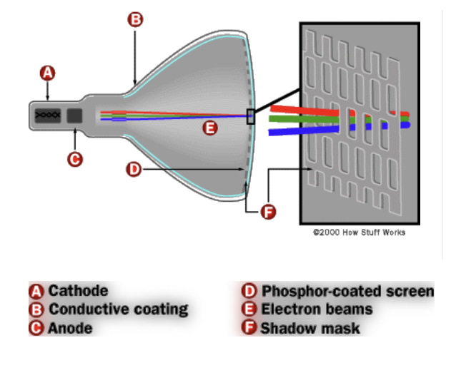

A monitor is the visual output device connected to the computer tower. It displays picture and images in real time, allowing one to interact with the computer, activating and running its programs at will.
What is the job
The camera can record real-life events and upload them to the terminal and the Internet. People can view these videos at any time.